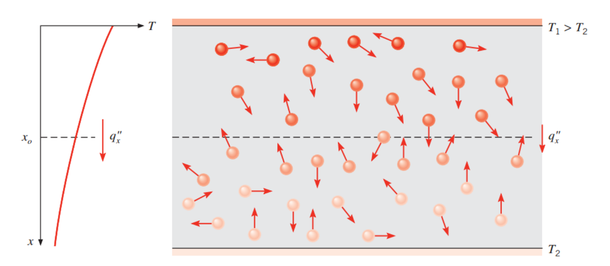
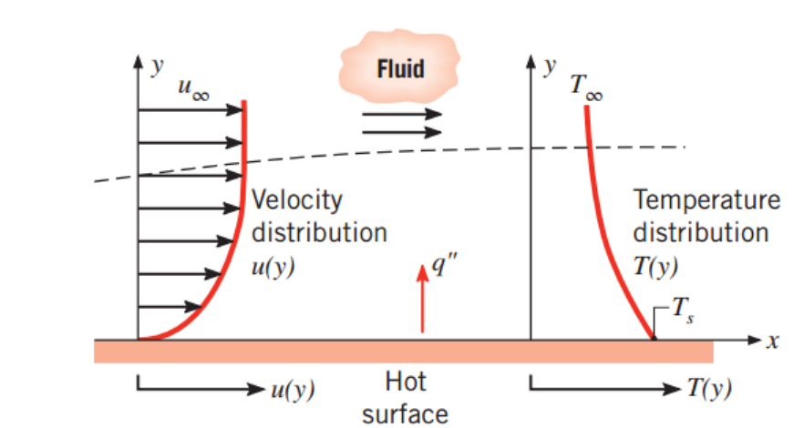

지금부터 기계공학의 꽃 열전달에 대해서 들어가보자.
당연히 열전달이 뭔지부터 ㄱㄱ
Heat transfer:
온도차이
로 인한
Thermal Energy
이동
종류는 3가지
- Conduction - Stationary medium에서
- Convection - Moving Fluid 에서
- Radiation - Electromagnetic wave에서 No - Medium
1단원에서는 기본적으로 이 3가지가 무엇인지 알아보고.
2,3,4,5단원은 Conduction
6단원부터는 Convection radiation을 알아보자. - Conduction

사진을 보는 것처럼, Conduction은 분자간의 충돌로 인한 에너지 교환이다.
분자들은, Translation, rotation, vibration E를 가지고 있고,
온도가 높을 수록 이 에너지는 당연히 클것이다.
따라서, 온도가 높은 곳에있는 분자 -> 온도가 낮은 분자들로
에너지가 이동하고
이것을 Conduction이라고 부른다.
Conduciton의 heat flux 다음과 같이 Fourier's Law로 표현된다.
(Steady state condition 일때!! - 2단원에서 설명)
k: Thermal conductivity (W/m k)
qx'': Heat flux (Heat rate per area, W/m^2)
![[Heat transfer] Ch 1. Introduction](./images/img-002.png)
여기서 Thermal conductivity는 medium의 안의 입자들이 얼마나
충돌로 인한 에너지교환을 잘 하는지를 나타내는 parameter이다.
즉, K가 클수록 ->> 열전달이 잘 된다는말!
열전달이 잘된다???, 같은 heat flux에서, 온도 차이가 작다 라는 말이다.
그리고, 위의 부호가 (-)인 이유는 Heat flux는 온도가 높은 곳에서 낮은곳으로 이동하고,
즉, dT/dx <0 이기 때문이다.
헷갈리지 말아야 할 용어,
Heat rate(q), (W)
![[Heat transfer] Ch 1. Introduction](./images/img-003.png)
Heat rate는 단위가 와트, 즉 J/s이다.
2. Convection
대류 열전달은 Moving fluid에서 일어난다.
대류의 원인은 크게 두가지, Diffusion, Bulk motion두가지로 인해서 일어나고,
뜨거운 고체 surface와 주변의 유체의 열전달로 예시를 들 수 있다.

자자, 결국 열전달은 에너지교환이다.
즉, 속도차이가 큰 고체 표면 근처의 유체에서
열교환이 활발하게 일어날 것이고, 이때 온도 구배가 큼을 확인 할 수 있다.
Convection을 자세히는 6단원에서 다룰 것이지만, 3가지로 분류만해보면
1. Natural or free convection
2. Forced convection
3. Phase change convection
으로 분류 할 수 있고,
Natural Conveciton위주로 책에서는 다룰 예정이다.
Natural convection은 자연 대류 즉, 공기의 부력에 의한 heat exchange만
고려한다.
Heat flux : Newton's cooling law
를 사용하여 다음과 같이 표현하고
![[Heat transfer] Ch 1. Introduction](./images/img-005.png)
가장 중요한 것은 h: Convection heat transfer coefficient (W/m^2 K)
h는 대류 열전달 계수 즉 클수록, 대류 열전달이 활발히 일어난다는 의미이다.
이에 영향을 주는 것은, 위 그림에서 분석한 Boundary layer, Surface geometry, fluid motion등등 여러 가지가 있다.
3. Radiation
복사 열전달은 온도가 0 이 아닌 surface에서는 모두 방출된는 에너지 이다.
Radiation의 근본 원인:
분자 전자배열의 change -> Electromatnetic waves(Photons) 방출
전자기파가 결국 복사 열전달 방식이기 때문에 매질을 필요로 하지 않는다.
(매질(공기)가 없는 우주에서 날라오는 태양의 에너지: 복사열전달)
![[Heat transfer] Ch 1. Introduction](./images/img-006.png)
복사열은 다음과 같이, Surface emissive power(Eb)로 표현되며,
Stefan-Boltzmann Law라고 부른다.
(σ=5.6704×10−8 W/m2·K)
![[Heat transfer] Ch 1. Introduction](./images/img-007.png)
여기서 재밌는 것은, 위의 경우는 흑체(Black body)의 경우이고,
흑체가 아닌 경우는 흑체와의 복사열 비율 (
emissivity
)
를 사용하여 나타낸다.
![[Heat transfer] Ch 1. Introduction](./images/img-008.png)
하나더 재밌는 것은, 모든 표면은 복사열은 다른 source(surrounding)으로 부터
G만큼
받고,
그 받은 것중에서 일부만 흡수하며, 흡수율을 Absorptivity로 표현한다.
![[Heat transfer] Ch 1. Introduction](./images/img-009.png)
여기서 흡수율은 0과 1 사이 이며, 1보다 작은 경우, 물체에서 빛이 전부 반사하지 않기 때문에,
Opaque하다 라고 말한다.
만약에, 표면이 매우 작고,
아주 큰 Surrounding 의 온도가 Tsur 일 경우
G = σ Tsur^4로 표현 할 수 있다. (surface gray -> α = e)
따라서, Radiation Heat Flux 는 다음과 같다.
[방출하는 Emissive power - 흡수하는 Irradiation]
![[Heat transfer] Ch 1. Introduction](./images/img-010.png)
이상하게 Convection term이랑 똑같이 생기가 하려고 저 식을 인수분해 해줘
다음과 같이 표현한다.
![[Heat transfer] Ch 1. Introduction](./images/img-011.png)
![[Heat transfer] Ch 1. Introduction](./images/img-012.png)
hr : Radiation Heat transfer Coefficient